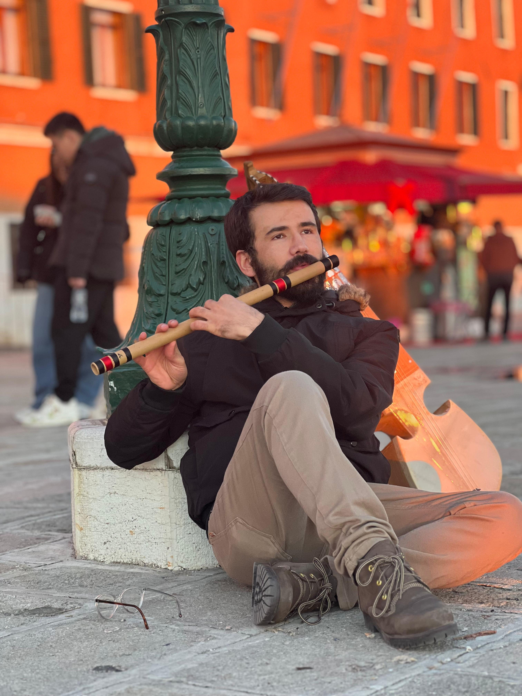

Mathematics student at the International Centre for Theoretical Physics (ICTP), interested in topology, geometry, algebra, and mathematical research.
Trieste, Italy · munawarhamiya8 [at] gmail [dot] com
I am a mathematics student currently pursuing a Postgraduate Diploma in Mathematics at the International Centre for Theoretical Physics (ICTP), Trieste, Italy. My interests lie in pure mathematics, particularly topology, geometry, algebra, and their connections with mathematical physics.
International Centre for Theoretical Physics (ICTP), Trieste, Italy
September 2025 – Present
Courses include Real Analysis, Topology, Algebra, Differential Geometry, Functional Analysis, and Complex Analysis.
International Mathematics Master Programme (IMM-LUMS)
Lahore University of Management Sciences, Pakistan
September 2023 – June 2025
Thesis: Discrete Morse Theory for Regular Cell Complexes with Applications to 2-point Configuration Spaces for Connected Simple Graphs.
Sukkur IBA University, Pakistan
January 2019 – March 2023
Thesis: Construction and Implementation of Denotators in Rubato Composer.
My master's research focused on discrete Morse theory for regular cell complexes. I studied applications to 2-point configuration spaces of connected simple graphs, including approaches related to computing Borel–Moore homology for open cell complexes.
My broader mathematical interests include understanding topological structures, geometric methods, algebraic frameworks, and their applications in modern mathematics.
Lahore University of Management Sciences (LUMS)
August 2024 – May 2025
Studied discrete Morse theory for cell complexes and led discussions based on Nicholas A. Scoville's work on discrete Morse theory. Presented research on regular cell complexes and configuration spaces of graphs.
Lahore University of Management Sciences (LUMS)
January 2024 – December 2024
Assisted with grading, examination activities, and revision sessions for students.
Research papers and mathematical writings will be added here.
Study of discrete Morse functions on regular cell complexes and their applications to the topology of configuration spaces of graphs.
Exploring computational approaches for mathematical problems using programming tools including Python and MATLAB.
Email: munawarhamiya8 [at] gmail [dot] com
Location: Trieste, Italy